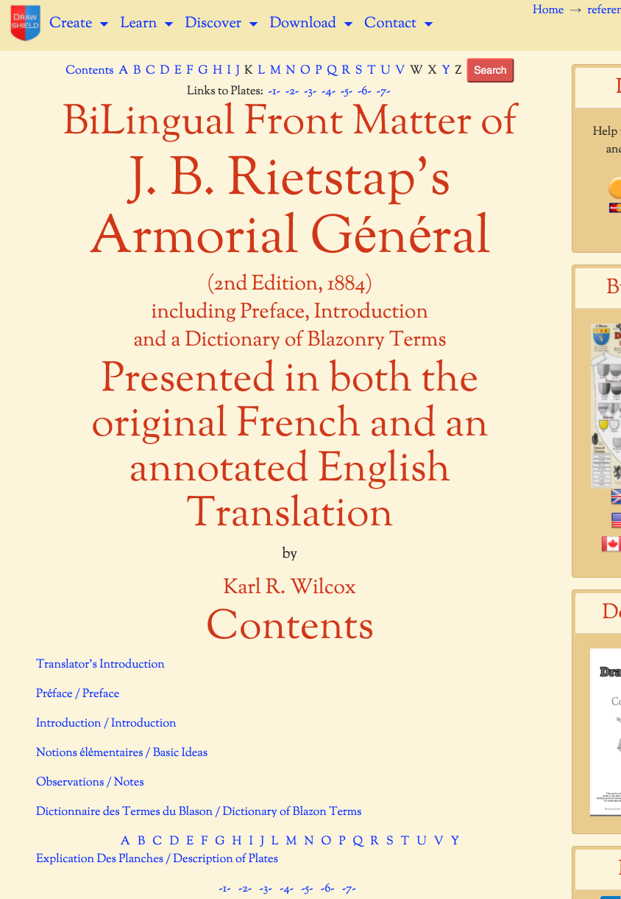

* J.B. Rietstap's Armorial Général - An English Translation* (Work in Progress)
Those of you familiar with
drawshield.net
may be aware of its shield drawing capabilities, but it also has some heraldry reference resources available. In addition to full, searchable versions of "Parker's Heraldry" and the "Book of Public Arms" I have now added a partially complete bilingual (French/English) version of my own translation of J.B. Rietstap's famous work the "Armorial Général". You will find a parallel text of both languages, including annotations on the English side. So far I have completed all of the Preface, Introduction, Basic Ideas, Observations and letter 'A' from the glossary, including "lightbox" style links to all of the images. I have made this early version available here
https://drawshield.net/reference/rietstap/index.html
to get your feedback, comments and corrections - these are all welcome but don't be too harsh a critic of my language skills - my only formal qualification is a very poor grade in French from my high school days but I have put in a lot of hard, but very satisfying, work since then to get this far! If anyone would like to help out, either correcting what I have done, or translating some further bits of the glossary please go ahead. In any case, I shall continue with my endeavours and hope that you find this a useful and interesting resource.
Best regards all,
Karl

* J.B. Rietstap's Armorial Général - An English Translation* (Work in Progress)
Those of you familiar with drawshield.net may be aware of its shield drawing capabilities, but it also has some heraldry reference resources available. In addition to full, searchable versions of "Parker's Heraldry" and the "Book of Public Arms" I have now added a partially complete bilingual (French/English) version of my own translation of J.B. Rietstap's famous